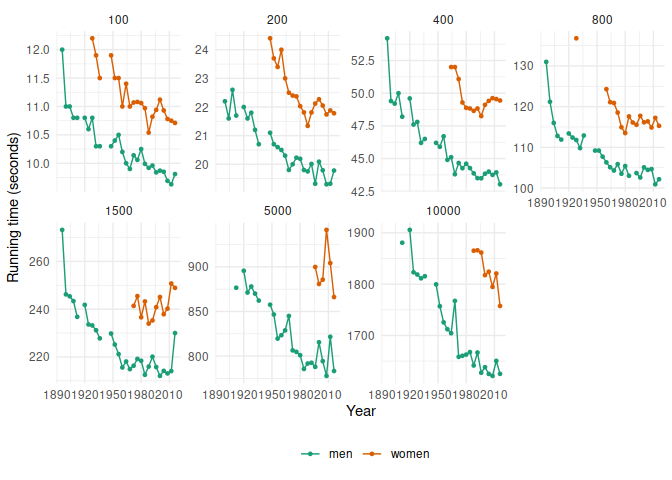

This package provides examples of tsibble datasets which can be used within the tidyverts family of packages.
Installation
You could install the stable version on CRAN:
install.packages("tsibbledata")You could install the development version from GitHub using
# install.packages("remotes")
remotes::install_github("tidyverts/tsibbledata")Example
library(tsibbledata)
library(ggplot2)
ggplot(olympic_running, aes(x=Year, y = Time, colour = Sex)) +
geom_line() +
geom_point(size = 1) +
facet_wrap(~ Length, scales = "free_y", nrow = 2) +
theme_minimal() +
scale_color_brewer(palette = "Dark2") +
theme(legend.position = "bottom", legend.title = element_blank()) +
ylab("Running time (seconds)")